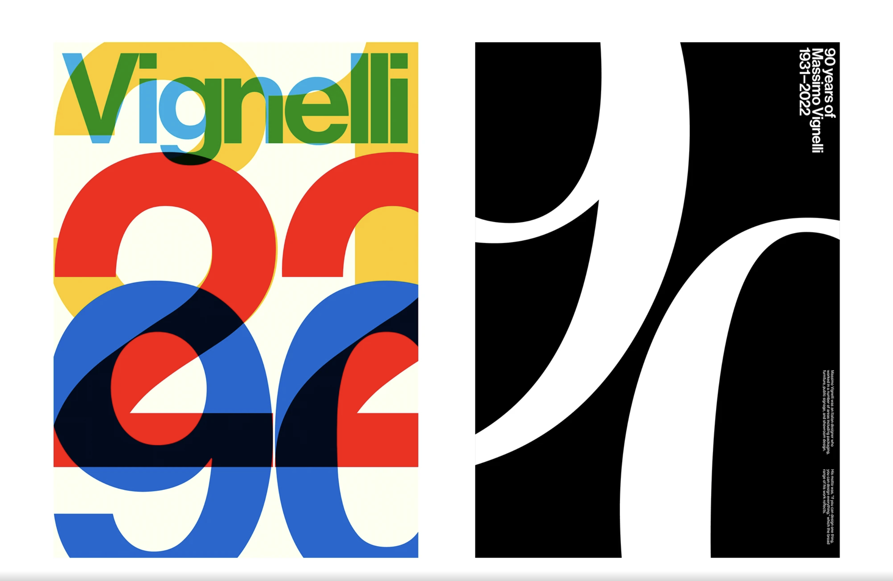
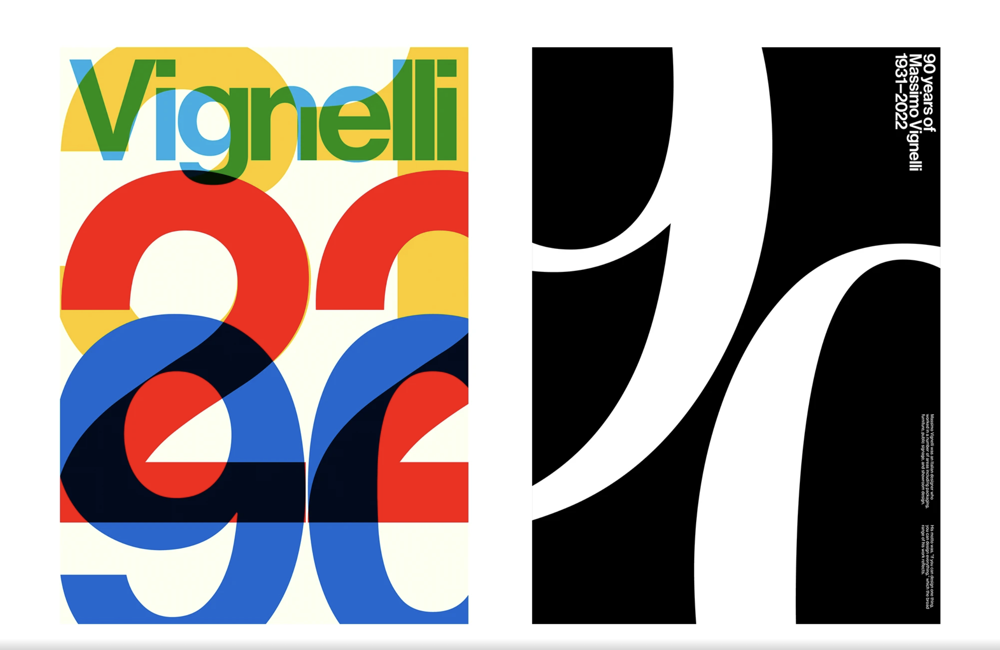

Welcome to my passion page! On this site, we'll be exploring my passion: Helvetica Neue. They say that the first step in overcoming an addiction is admitting it! This is not that. I just like a font.
Helvetica is a neo-grotesque design, one influenced by the famous 19th-century (1890s) typeface Akzidenz-Grotesk and other German and Swiss designs. Its use became a hallmark of the International Typographic Style that emerged from the work of Swiss designers in the 1950s and 1960s, becoming one of the most popular typefaces of the mid-20th century. Over the years, a wide range of variants have been released in different weights, widths, and sizes, as well as matching designs for a range of non-Latin alphabets. Notable features of Helvetica as originally designed include a high x-height, the termination of strokes on horizontal or vertical lines and an unusually tight spacing between letters, which combine to give it a dense, solid appearance.
This description is from Wikipedia.

 
